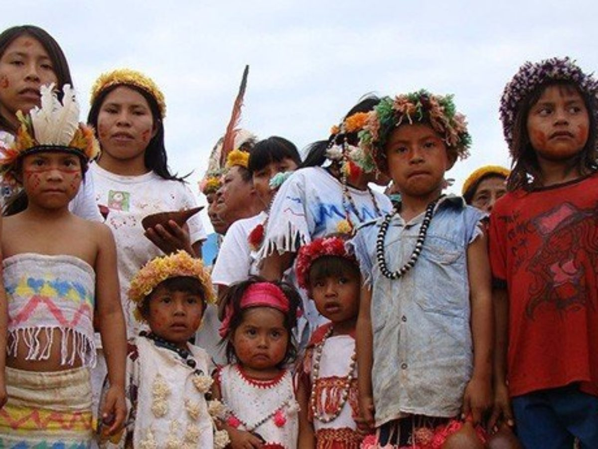

Originários do tronco da família linguística tupi, os guaranis habitam diversos estados do Brasil e estão divididos em três grupos: kaiowá, mbya e ñadevaesse.
Os guaranis formam o maior povo indígena, em quantidade de indivíduos, vivendo no Brasil. Somente no país, há cerca de 57 mil pessoas desta etnia, conforme o IBGE (Instituto Brasileiro de Geografia e Estatística)
Onde vivem os guaranis?
No Brasil, os guaranis vivem, principalmente, nos estados brasileiros do Mato Grosso do Sul, São Paulo, Paraná, Rio Grande do Sul, Rio de Janeiro, Espírito Santo, Pará, Santa Catarina e Tocantins.Também há indígenas guaranis vivendo na Argentina, Bolívia e no Paraguai. A maior parte dos guaranis vivem na Bolívia, onde há 78,3 mil indivíduos. No Paraguai, existem 41,2 mil e na Argentina, 6,5 mil.
Características do povo guarani
Dependendo do local, os guaranis também são conhecidos como Chiripá, Kainguá, Monteses, Baticola, Apyteré, Tembekuá, entre outras nomenclaturas. Porém, eles se autodenominam “Avá”, que significa “pessoa” na língua guarani. O povo guarani se divide em diversos subgrupos, predominantes nas diversas regiões que habitam. Embora reconheçam sua origem, história e cultura em comum, esses grupos são diferenciados internamente pela maneira como manifestam a cultura, a organização social e política, a língua e, ainda, a forma de praticar a religião.
Os guaranis são agricultores, coletores e caçadores. O espaço físico onde habitam é denominado "tekoha". Para os guaranis, tekoha é o lugar físico onde é possível realizar modo de vida guarani, contemplando suas relações familiares, sociais e com o ambiente. Esse conceito está no cerne da maioria das disputas fundiárias vivenciadas pelo povo guarani no Brasil. Isso porque os guaranis têm, historicamente, a característica de serem um povo semi-nômade, o que serviu de pretexto para negar-lhes o direito à terra diante dos interesses econômicos dos não-indígenas.

Cultura guarani
Os indígenas guaranis, também chamados de "grande povo", acreditam que foram criados por Tupã para admirar a terra, através da palavra. A mitologia guarani é bastante extensa e complexa, incluindo desde mitos de criação até narrativas sobre seu contato com os brancos. A organização social e os cantos estão entre as mais evidentes manifestações culturais do povo guarani. Para eles, a terra, tekoha, é parte integrante da família. Os cânticos guaranis são entoados como uma forma de demonstrar aos deuses que existem sobre a terra. Sua música também é utilizada para o controle das forças da natureza, como falta ou excesso de chuva. Os cantos são entoados ao som de cabaças, transformadas em instrumentos musicais.
Idioma guarani
O idioma guarani pertence ao tronco linguístico tupi-guarani, de onde derivam 21 línguas. Nesse sentido, os guaranis Mbya, Kaiowa e Ñandeva se comunicam em dialetos da língua guarani. Os jesuítas aprenderam o idioma para evangelizar os nativos e escreveram gramáticas sobre o idioma, permitindo sua difusão. Essa é a língua indígena mais falada na América do Sul e chega a 60% do Paraguai, país onde o guarani é considerado língua oficial ao lado do espanhol. As escolas sul-mato-grossenses da fronteira o ensinam na escola.
Contato com os colonizadores
Migrar é um processo natural entre os guaranis, pois permite a renovação do solo, garantindo sua sobrevivência. A prática nômade advém de sua característica essencialmente extrativista e ocorre há mais de 2 mil anos. Além disso, a migração era estimulada pela crença na "terra sem mal", espécie de paraíso mítico da cosmologia Tupi-Guarani.
Antes da chegada dos europeus, os guaranis circulavam pela região litorânea entre o sul do atual estado de São Paulo até o Rio Grande do Sul, adentrando o interior nas bacias dos rios Paraná, Uruguai e Paraguai. Esse traço cultural foi interrompido pela colonização. Após a chegada dos europeus, grupos de guarani iniciaram um processo de migração, em direção ao interior do continente, para fugir dos ataques, assassinatos e da escravidão, seja dos portugueses, seja dos espanhóis. Até o XVIII, a história do povo guarani também foi marcada pelas missões jesuíticas, que chegaram a concentrar milhares de guaranis com o objetivo de os catequizar.
A interrupção do processo de migração foi acentuada após a Guerra do Paraguai, ocorrida entre 1864 e 1870. Ao fim da guerra, o território foi negociado para ocupação e para a garantia da exploração econômica. Entre os primeiros produtos explorados na região está a erva-mate, ainda bastante consumida. Em 1882, o governo brasileiro cedeu o território ocupado pelos guaranis para a implantação das lavouras de erva-mate.
A solicitação foi feita por Thomaz Larangeira, que fundou a Companhia Matte Larangeira, em 1892. Obrigados a deixar o território, os indígenas foram acometidos de graves problemas de saúde e o impacto social é sentido até hoje. A situação agravou-se em 1943, quando o presidente Getúlio Vargas assinou o decreto de criação da Colônia Agrícola Nacional de Dourados. O objetivo do órgão era oferecer terra às famílias de migrantes de outras regiões e países. Era mais uma tentativa de ocupar a região em um movimento que ficou conhecido como Marcha para o Oeste. Sucessivos programas de deslocamento foram implantados e resultaram em migrações forçadas dos guaranis.
Entre as décadas de 1970 e 1980, se inicia o processo de mecanização das culturas, principalmente as de soja e cana-de-açúcar. Os produtos ainda são os principais commodities agrícolas da região. Nesse contexto, no Mato Grosso do Sul, estado onde áreas de ocupação indígena deram lugar a grandes fazendas de pecuária e soja, há sucessivos ataques aos indígenas guaranis.
Ainda na década de 1980, o governo federal implantou o Proálcool. O programa tinha como meta criar oferta e demanda para o etanol, ajudando a contornar a crise internacional do petróleo. No Mato Grosso do Sul, indígenas guaranis passaram a trabalhar nas lavouras de cana-de-açúcar. Não eram raros os casos de denúncia de exploração do trabalho escravo. Atualmente, os guaranis lutam pela preservação de seu modo de vida, seus territórios e sua língua.

Reservas indígenas guaranis
Entre 1915 e 1928, o SPI (Serviço de Proteção ao Índio) demarcou oito terras para abrigar o território guarani na área que hoje corresponde ao Estado de Mato Grosso do Sul. As áreas totalizavam 18,1 hectares. A estratégia foi usada para que, em pequena disposição de território, os indígenas assimilassem a cultura envolvente (termo da antropologia usado para falar do colonizador).
A manutenção dos indígenas nas áreas de proteção foi alterada pela imposição da monocultura na região, na década de 1970. O Mato Grosso do Sul é um dos principais produtores de soja do País. Esse modelo de exploração resulta no esgotamento do terreno em consequência do uso de defensivos agrícolas e da mecanização. A biodiversidade local foi alterada e os deslocamentos de indígenas prosseguiram. Os indígenas Guarani-Kaiowá estão entre os que conseguiram resistir, contudo, foram explorados. Ainda na década de 1980, os Guarani-Kaiowá retomaram a posse de 11 terras tradicionais. Juntas, as áreas totalizam 22,4 mil hectares e a posse foi homologada após a Constituição de 1988.
Estudos antropológicos apontam que há mais terras tradicionais pertencentes aos indígenas guaranis. O fim da disputa só ocorre após a homologação do governo federal. Há um impasse entre os indígenas e proprietários de terras na região. Em consequência da disputa, são constantes os conflitos armados nas proximidades das aldeias. Entre 2003 e o primeiro semestre de 2006, 400 indígenas foram assassinados na região. A reserva indígena da cidade de Dourados (MS), conta com 3,5 mil hectares. No local vivem cerca de 20 mil indivíduos de etnias distintas, entre Guarani-Kaiowa, Guarani-Ñandeva e Terenas. Dadas as disputas por terras entre indígenas e fazendeiros, não são raros os conflitos na região.